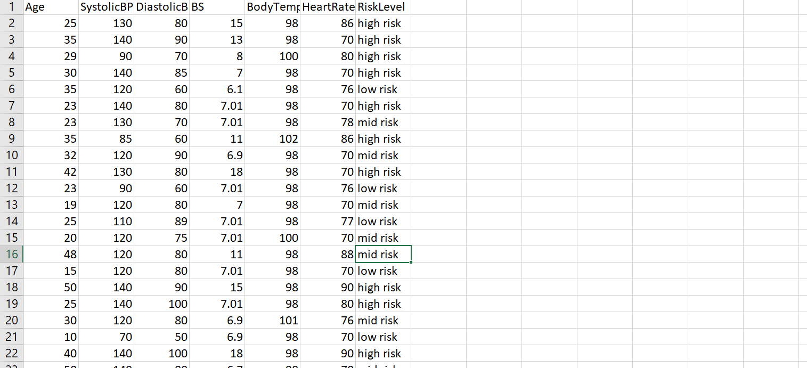
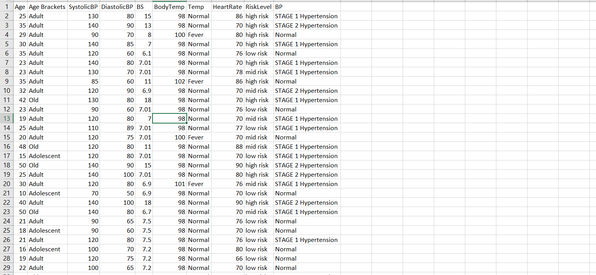
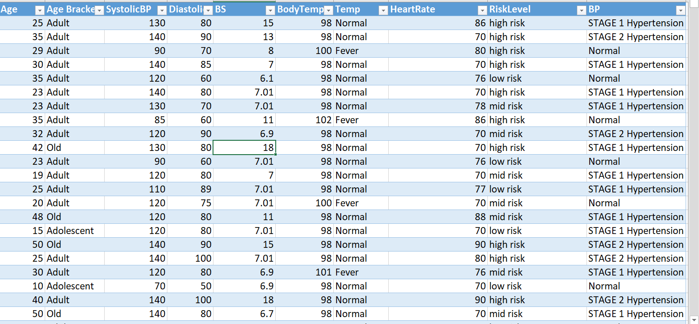
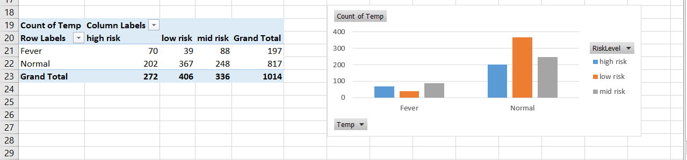
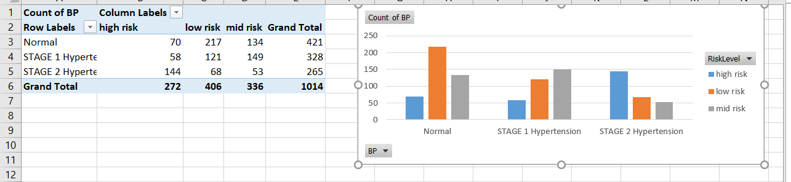
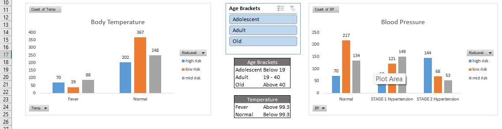
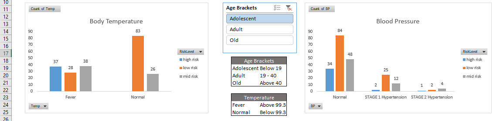
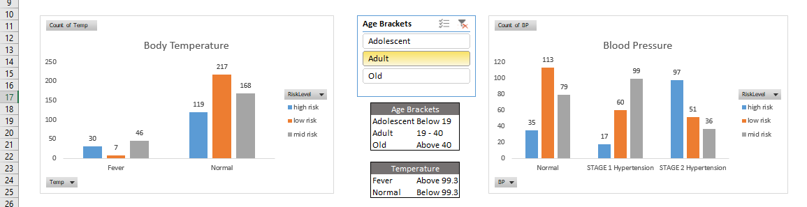
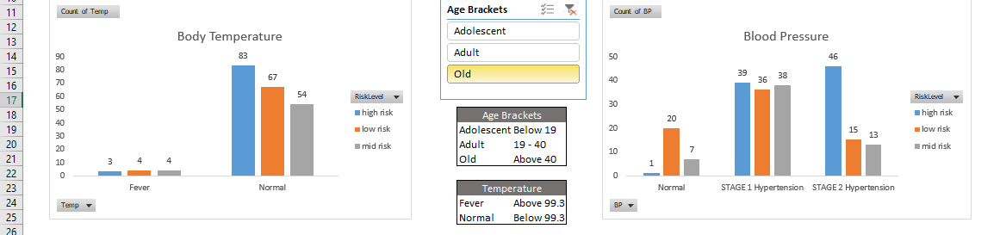

Maternal Health Risk
Documentation
Data source: kaggle
https://www.kaggle.com/datasets/pyuxbhatt/maternal-health-risk
About Data Set:
This is a data set that shows some of the factors that influence how a pregnancy can end up being high risk.
Cleaning Process
Goal : Make Data set more understandable for Analysis I took this  I added a little bit of context to the original so that it is more readable
a. Age Bracket(Adolescent: below 19, Adult : between 19 and 40,
Old: above 40).
Code Used:
b. Temp (Fever: above 99.3 F , Normal: below 99,3 F)
Code Used:
c. BP (Stage 1 hypertension is a systolic pressure ranging from below 130 to 139 mm Hg or a diastolic pressure ranging from 80 to 89 mm Hg. Stage 2 hypertension. More-severe hypertension, stage 2 hypertension is a systolic pressure of 140 mm Hg or higher or a diastolic pressure of 90 mm Hg or higher. and Normal is a systolic pressure below or 120 mm Hg or a diastolic pressure below 80 mm Hg.)
Code Used:

Then I transformed it into a table
(ctrl T)

Code Used:
=IF([@BodyTemp]>99.3,"Fever","Normal") b. Temp (Fever: above 99.3 F , Normal: below 99,3 F)
Code Used:
=IF([@Age]<19,"Adolescent",IF(AND([@Age]>=19,[@Age]<=40),"Adult",IF([@Age]>40,"Old")))
and c. BP (Stage 1 hypertension is a systolic pressure ranging from below 130 to 139 mm Hg or a diastolic pressure ranging from 80 to 89 mm Hg. Stage 2 hypertension. More-severe hypertension, stage 2 hypertension is a systolic pressure of 140 mm Hg or higher or a diastolic pressure of 90 mm Hg or higher. and Normal is a systolic pressure below or 120 mm Hg or a diastolic pressure below 80 mm Hg.)
Code Used:
=IF(OR(AND([@SystolicBP]>=120,[@SystolicBP]<=19),[@DiastolicBP]>[@DiastolicBP]),"Elevated
blood
pressure",IF(OR(AND([@SystolicBP]>=130,[@SystolicBP]<140),AND([@DiastolicBP]>=80,[@DiastolicBP]<90)),"STAGE
1
Hypertension",IF(OR([@SystolicBP]>=140,[@DiastolicBP]>=90),"STAGE
2
Hypertension",IF(OR(AND([@SystolicBP]>=130,[@SystolicBP]<140),AND([@DiastolicBP]>=80,[@DiastolicBP]<90)),"STAGE
1
Hypertension",IF(OR([@SystolicBP]>=180,[@DiastolicBP]>120),"Hypertension
Crisis","Normal"))))) Data Exploration
Goal : Find the correlation between the columns.Looking at the data set, not every column has an influence on the Risk Level.
For example, Heart Rate is Relatively normal throughout the data set. Blood glucose also.
That leaves me with Age,Age Bracket, SystolicBp,DiastolicBP,BodyTemp,Temp and BP.
Since Age Bracket was created to categorize Age, I remove age. Also Temp from BodyTemp, I removed BodyTemp.
BP was created to make analyzing SystolicBp,DiastolicBP easier.
I created pivot tables (alt H N V) based on two of the factors I had remaining(Temp and BP)
Temp
 Fields used : Risk Level and TempFrom the image above, a larger amount of women with normal body temperature have the most risk.
This may be due to other factors not being considered, like age.I talk about this at the Next Section
BP
 Fields used : Risk Level and BPThis shows the women most liable to hava a high risk pregnancy are women in Stage 2 Hypertension
Visualization
Goal : Create a Dashboard and Story TellingI created a dashboard to visualizing answers gotten from data exploration. This makes storytelling more engaging.
I copied the two charts to a seperate sheet and Inserted a slicer with Age Brackets (alt N SF). This filters the two charts based on the Age Brackets

Adolescent (Below 19)
 In the image above, adolescents are more likely to have a high risk with fever(above 99.3 F). While BP is not a huge factor
Most of the mothers in this category has the lowest chance of being high risk.
Adult(20 - 40)  In the image above, adults are more likely to have a high risk with Stage 2 Hypertension(High blood pressure). While Body Temperature is not a huge factor
Most of the mothers in this category has the highest chance of being low risk.
Old(Above 40)  In the image above, adults are more likely to have a high risk with High blood pressure than a fever(above 99.3F)
Most of the mothers in this category has the highest chance of being high risk.
Key Notes
1. High blood pressure during pregnancy can affect the development of the placenta, causing the nutrient and oxygen supply to the baby to be limited. This can lead to an early delivery, low birth weight, placental separation (abruption) and other complications for the baby. High blood pressure affects a mother depending on her age. The older she is, the more high blood pressure makes pregnancies high risk
2. Fever raises your baby's risk of neural tube defects (NTDs) such as spina bifida, anencephaly, and encephalocele. This is more evident in women under the age of 19